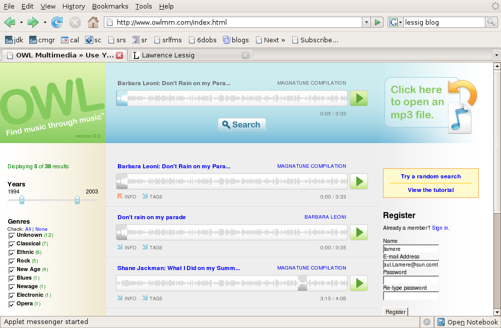
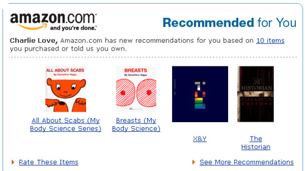

At the EchoNest blog,
they've posted 5 example mixes generated by their Auto DJ - the
Auto DJ can automatically time-stretch or compress and align tracks to
give a seemless playlist (anyone who's listened to shuffle play on an
iPod knows how important that can be). Listen to the Beatles track
- its pretty interesting to hear the different songs fade in and out -
it almost sounds like a completely new Beatles song. It's pretty neat.
Saturday Nov 25, 2006
Pandora, the music discovery tool based on the music genome project is now offering a podcast all about music - in particular - what goes into creating music. Pandora describes the series as:
Our attempt to give you an
inside look at the techniques musicians use to put their signature on
the music they write and perform.
We do get
into a little music theory, but we've tried to make it interesting and
understandable for anyone who's even just a little curious about music.
The
first podcast: The Basics of Vocal Harmony offered a set of
descriptions along with short examples tutti harmony, unison singing,
parallel and contrary motion and call and response . Greg and Kelly from
the San Francisco band 20 Minute Loop
provide the vocals for these demonstrations. It is really quite
an effective 9 minute lesson on vocal harmony.
The first
podcast was fantastic, it was short, to the point, professionally
recorded and crammed with information - more information in 9 minutes
than most podcasts give you in 99 minutes. I look forward to the
next one. Listen to the Pandora Podcast.
Friday Nov 24, 2006

OWL multimedia is a content-based music search tool - it will find music from creative commons labels such as Magnatune and ccMixter that Sound similar to your query song. OWL has a nifty interface, you can just drop an MP3 file from your collection into OWL - it will quickly analyze a song (and it really is quick, less than 2 seconds on my laptop) and then give you a list of songs from these creative commons labels that are similar - you can play the songs right in your browser too. It seems though that the search query is limited to a very small window of about 10 seconds within a song. The interface is pretty slick, you can filter the results by genre, year, license or label - and the integrated Java player is quite nice.
As far as the similarity search goes, I was less impressed. I was surprised that for many queries, I would receive results with many songs from widely different genres - Lute music yielding Electronica, Blues guitar yielding Hip-hop. Of course, this is an on-going problem with content-based music similarity - what is similar for one listener is not necessarily similar for another. Still, I wonder if OWL would do better to model a whole song and search based on whole song similarity rather than the small window that it is doing.

Here are some examples of how results OWL produces:
Query: First 10 seconds of: Promo Mom - by the Strap Ons - a hard core punk song - search results
- Concerto for Violin and Orchestra
- Praeludium in G
- Tentos (no.4)
- Fantasia
- Sonata VIII in C Minor
These are all classical works - not a good match in the bunch. I'm guessing that OWL was fooled by the 2 seconds of silence followed by a very un-musical shout. So lets try a section in the middle of the song where it is all music - so starting at about 30 seconds into 'Promo mom' we get the following search results:
- Promo mom by the Strap Ons (it found itself - that's good!)
- Part that ass by the Strap Ons
- Chucky got lucky by the Strap Ons
- Function by Somadrone
- Drugs sex violence by the Strap Ons
This is much better - it found lots of 'Strap On's and the song by Somadrone fit in very well too.
Using the song 'Juke Joint Boogie' - delta blues on guitar - starting at 20 seconds in I got search results with:
- Juke Joint Boogie - it found itself (actually twice, since it was on a compilation cd too)
- Suite no 3 in C Major -a cello piece
- Telekonology - an ambient piece
- Partita Seconds in sol minore - another cello piece
It
looks like OWL has a tendency to match delta blues guitar and cello -
lets start with cello and see what we get - starting with Partita
Seconda in Sol Minore by Vito Paternoster we get
- Partita Seconda - it finds itself, good!
- Sonata Prima by Vito Paternosta - more cello good
- Suite 5 BMV 1011, prelude by Antonio Meneses - more cello
So the results for cello sonatas yield more cello sonatas - no clunkers in the first 20 results
This pattern continued for a large number of searches - some yielded very good results, while some yielded surprisingly poor results. Often times I would receive very different search results if I shifted the 10 second query window even by a second or two - leading me to conclude that they may get better (or at least more stable) results if they use a wider query window.
Perhaps the real goal of OWL is not to find songs that sound like a query song - but really to find snippets of songs - this would be very useful if you are creating a remix - a tool to help you find song fragments that fit in just right with your song would be incredibly useful for a remixer - but OWL isn't billing itself as a remix tool, it is billing itself as a music discovery tool :
Owl's music discovery engine compares your favorite songs to thousands of others to find similar songs for you to listen to, enjoy, and purchase.
OWL has now found its way onto the search page of creativecommons.org,
right next to Google, Yahoo and Flickr - a pretty visible spot, so I
expect that we will be hearing more from OWL - but in the long run, I
don't expect too much more from them. Rumor is that the music
technologists/machine learning team behind OWL has moved on to bigger
and better things - so I don't expect to see much improvement in the
core similarity engine of OWL.
Via lessig blog
Wednesday Nov 22, 2006
It's a good news, bad news kind of thing for Pandora - the good news is that in the last week, Pandora added millions of new listeners - the bad news is that they have partnered with MSN radio to do so.
MSN Radio has been leaking listeners- so they are hoping to stem the tide by giving their listeners a more compelling listening experience. MSN Radio still has the same set of 3000+ stations, but now on their main page is a a launcher for the Pandora player. It's the same old Pandora player - placed inside a larger window showing Microsoft's advertisements. The music even seems to be coming from Pandora and not MSN Radio - so they haven't fully integrated Pandora into MSN radio .
Why is partnering with MSN Radio bad news? Microsoft has a bit of a history trampling over its partners. The recent abandonment
of its PlayForSure DRM for the Zune left the many MSN customers, audio
player manufacturers and music service providers very unhappy.
Hopefully Pandora won't have the same fate. More in the article on CNET - MSN, Pandora snyc[sic] online radio
Tuesday Nov 21, 2006
I spent a bit of time yesterday writing a XSPF playlist resolver web service. The playlist resolver will take a playlist in XSPF format and return a new playlist that has been augmented with a MusicBrainz identifier and has the various other fields adjusted to a canonical form.
Here's an example using a playlist from Oscar Celma:
<playlist version="1" xmlns= "http://foafing-the-music.iua.upf.edu">
<trackList>
<track>
<location>http://mtgdb.iua.upf.edu/total/audio/mp3/w/wilco/the_spongebob_squarepants_movie_/03-just_a_kid.mp3</location>
<image>http://foafing-the-music.iua.upf.edu/services/AWS?display=image&keywords=U2</image>
<info>http://www.mp3.com/search.php?stype=artist&query=U2&action=Search</info>
<title>With o without yu</title>
<creator>U2</creator>
<album>Josua tre</album></track>
</tracklist>
</playlist>
And here's the same playlist after canonicalizing it:
<playlist xmlns="http://foafing-the-music.iua.upf.edu" version="1">
</tracklist>
<trackList>
<track>
<location>http://mtgdb.iua.upf.edu/total/audio/mp3/w/wilco/the_spongebob_squarepants_movie_/03-just_a_kid.mp3</location>
<image>http://foafing-the-music.iua.upf.edu/services/AWS?display=image&keywords=U2</image>
<info>http://www.mp3.com/search.php?stype=artist&query=U2&action=Search</info>
<creator>U2</creator>
<identifier>http://musicbrainz.org/track/6b9a509f-6907-4a6e-9345-2f12da09ba4b.html</identifier>
<title>With or Without You</title>
<album>The Joshua Tree</album>
</track>
</playlist>
The
key is the addition of the MusicBrainz identifier. This makes it easy
to tie a track to all of the metadata that describes the track.
Lucas Gonze (of WebJay fame), writes more about it on his blog: Content Resolver Mashup.
Monday Nov 20, 2006
First year students in college suffer from the Freshman 15 - the 15 lbs gained by a freshman when encountering unlimited choices of food - likewise at Google with all of the free meals - the rumor is that new employees pack on a few extra pounds. I'm battling the over-30 30 - and as the holidays approach, it is time to get serious about getting in shape.
As the old saying goes, you can't control what you don't measure - so in addition to increasing daily exercise and reducing eating I've started daily tracking of my weight and I'm using the "google 15" - a google module to track my progress. Google 15 keeps a moving average of my daily weight and presents a nifty plot - all on my google home page - so while I'm checking my calendar and my To Do list - I get to see my progress (or lack of it). I'll let you know how it works out (now its time to go take a long walk).

Sunday Nov 19, 2006
In the post, Replacing DRM with a Music Tax is Incredibly Stupid, Mike Arrington at TechCrunch offers his take on the Peter Jenner's Big Lables are f*cked, and DRM is Dead story in The Register a few weeks back. Mike argues:
But I do not think that the government should step in and help these people. I do not think that we should legislate a tax on broadband Internet access and mobile phones that gives the music industry guaranteed revenue, and guaranteed profits, while simultaneously removing their incentive to innovate and serve niche markets.
Asking the government to prop up a dying industry is always (always) a bad idea. In this case, it is a monumentally stupid, dangerous, and bad idea.
Mike makes some good points - but so does Peter Jenner - in the
end I think we all want a system where users can get easy access to
music, can share music to whomever, can listen to music on any device
anywhere, while the artists get fairly compensated for their work.
How to make that happen is the problem and finding the solution
is not going to be easy. I'm not sure if we'll find the solution
in my lifetime - sigh.
On the XSPF mailing list, Lucas Gonze writes that the new draft of the XSPF spec has been released. The complete log of changes can be found here.
XSPF is an XML format for sharing playlists - that is open, portable and well-engineered - and with a little luck will be come the way to represent and share music playlists.
Saturday Nov 18, 2006
I took the 'American Accent' quiz (first seen on Brian Utterback's blog) - and it looks like I have a Boston accent. I had no idear!
| What American accent do you have? Your Result: Boston You definitely have a Boston accent, even if you think you don't. Of course, that doesn't mean you are from the Boston area, you may also be from New Hampshire or Maine. | |
| What American accent do you have? Take More Quizzes |
Tired of the usual recommendations of the form "If you like X then you will like Y" ? - then perhaps you should try the UnSuggester.
The UnSuggester turns the typical recommender on its head. Enter
the name of a book and recommends book that you are least likey to want to read. Here are a few tries:
- Critique of pure reason by Immanual Kant - my unsuggestion is Confessions of a shopaholic.
- My Life by Bill Clinton - my unsuggestion is Don't wast your life by John Piper
- Diplomacy by Henry Kissenger - my unsuggestion is Thud by Terry Pratchett
- Little women by Louisa May Alcott - my unsuggestion is Smart Mobs: the next social revolution by Howard Rheingold
- JavaScript : the definitive guide by David Flanagan - my unsuggestion is The sisterhood of the travelling pants by Ann Brashares
So if you just read a clunker and you are trying to purge your mind of the drivel, use the Unsuggester to find the book that is as far away from the offender. You can read more about how the UnSuggester works in this blog post at the LibraryThing blog.
The UnSuggester is a fun project put together by LibraryThing LibraryThing is "an online service to help people catalog their books easily. Because everyone catalogs together, you can also use LibraryThing to find people with similar libraries, get suggestions from people with your tastes and so forth."
Friday Nov 17, 2006
Pandora, the popular music recommendation engine, uses trained musicians to analyze music. According to Pandora:
our team of thirty musician-analysts have been listening to music, one song at a time, studying and collecting literally hundreds of musical details on every song. It takes 20-30 minutes per song to capture all of the little details that give each recording its magical sound — melody, harmony, instrumentation, rhythm, vocals, lyrics… and more — close to 400 attributes!
Pandora has always been secretive about what the 400 attributes are. That's not surprising since those attributes are the secret sauce that make Pandora work. I notice however that there is now a Wikipedia page called List of Music Genome Project Attribute that purports to detail the set of attributes Pandora uses for classifying music. It is a pretty interesting list with about 420 different attributes. There are over 50 attributes just related to vocals, 22 to guitar, 21 to synth. There are a few non-content based attributes too, such as:
- Production and Lyrics by Rap Icons
- Production and Lyrics by Respected Rap Artists
- Production by a Famous Producer
- Production by an Iconic Producer
Also interesting are the way they classify lyrics:
|
|
There certainly are some puzzling bits here, (such as why are Portuguese lyrics the only non-English lyrics mentioned).
I'm not sure how the wikipedia editors developed this list - it may be that they've just been capturing the output of the Pandora player when it says "I'm playing this song because ..." or perhaps the editors have some inside knowledge of the genome - as with most entries in the Wikipedia, it is probably best to be a bit of skeptical about the content.
The music discovery tool Musicovery is back on line... it was
first put up in June, but quickly taken down after it became too popular
for the site owner to afford. It looks like the site has
made it to the front page of Digg, which means, once again that it may
be too popular for its own good, as it doesn't seem to be able to
stream music right now. Give it a few days, hopefully it will recover.
It is a pretty neat tool, definitely worth checking out.
Here's what I said back in June ...
Adam points me to Musicovery
a music discovery tool similar to MusicPlasma that lets you explore a
music similarity space in a way very similar to MusicPlasma, but with
the added feature that you can actually listen to music. The
similarity to MusicPlasma is not a coincidence, both were developed by
Frederic Vavrille.

The music similarity model seems to be based on a 2D mood scale similar to the Thayer mood model.
Musicovery
is a pretty compelling music discovery tool. It is the only
interactive tool that allows you to listen to music (sites like last.fm
and Pandora give you a linear, one-song-at-a-time experience due to
internet streaming licensing requirements). I'm not sure how
Musicovery is licensing their music to allow interactive play like
this, but it is a clear improvement over the Pandora/Last.fm style. I
hope we'll see more sites like this.
There's absolutely no
supporting documentation on the site so it is hard to tell how things
work, how their similarity is determined (automatically, socially or by
human editors), nor is it clear how deep the music catalog (although
there seems to be a wide range of genres covered).
I was never
a fan of MusicPlasma, I though it was slow, the similarity was trivial
and you couldn't listen to the music. Now Musicovery has addressed all
of these issues giving us a compelling music discovery tool that is
fast, uses an interesting notion of similarity and most important of
all, lets you listen and interact with the music. 5 stars
Thursday Nov 16, 2006
Story in wired about Gracenote
- and the story behind why they took their user-contributed data and
started charging for it. David's comments in his Furl entry
are spot on.
That Good Looking Search Guy points me to this entry at Geeking With Greg about the course page for CS345: Data Mining being taught at Stanford. Quite a few interesting slide decks including Recommender Systems, Locality-Sensitive Hashing and clustering (1) (2).
Wednesday Nov 15, 2006
Whenever I receive a recommendation for a book from Amazon or a song from last.fm or a movie from Netflix, I like to know why they are recommending the item. They could be recommending it because I've purchased books by the same author, or listened to songs by the same artist - it could be that I have tastes similar to someone else who liked that item, or it could be that the company has received money from someone to recommend the item, or perhaps someone has figured out how to game the recommendation engine to give preference to their items.
If I am going to use a recommender I have to trust it, and in order for me to start trusting a recommender the recommender has to give me some idea as to why I am receiving the recommendation. Some recommender systems already do this. Pandora for instance, gives a good description of why they are recommending music -with statements such as "this song has prominent drums,R & B Influences and a Reggae Feel" . But most recommenders don't give you any idea. My favorite example is this recommendation from Amazon:

For some reason, Amazon has decided that there's a link between scabs, breasts and Coldplay.
Cameron
Marlow, a researcher at Yahoo's lab has an excellent post about how
recommenders are getting a clue about giving a clue - how there's a
trend in recommenders to give an explanation as to why an item was
recommended. Cameron rightly points out that Explanation creates understanding and understanding leads to trust. (and trust leads to suffering ... (whoops -wrong quote)).
Check out Cameron's blog post on overstated.net: Explanatory Algorithms
(tip of the hat to Adam)
This blog copyright 2010 by plamere